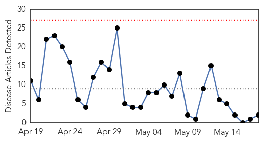
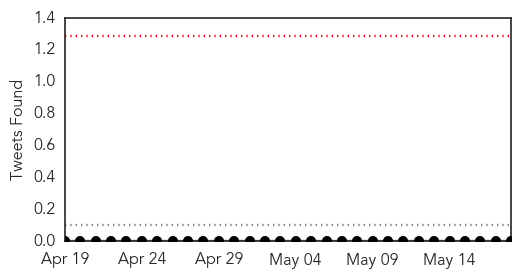
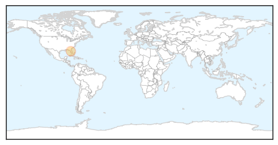
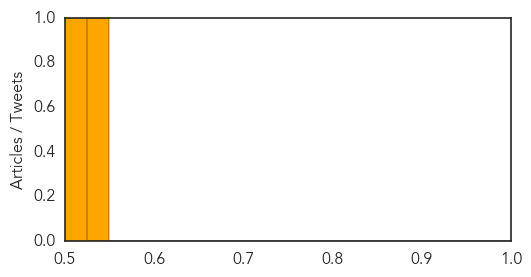

Measles
30-Day Web Trend
0 alerts, 0 warnings

30-Day Twitter Trend
0 alerts, 0 warnings

Article Locations
Article Confidences
Top Articles:
Top Tweets:
-
No tweets found for May 18, 2015
Influenza
30-Day Web Trend
0 alerts, 0 warnings

30-Day Twitter Trend
3 alerts, 0 warnings

Article Locations

Article Confidences

Top Articles:
- 0.987
- Signs Your Dog May Have the Flu
- 0.900
- One-jab universal flu shot in offing
- 0.895
- Bird flu outbreak threatens Iowa's chicken farm industry
- 0.894
- More Than 2 Million Minnesota Chickens to be Destroyed Due to Bird Flu
- 0.874
- Scientists crack memory code for flu-killing ‘assassin’ cells – The Financial Express
- 0.825
- Increase in Egyptian Cases of H5N1 Avian Flu in Humans
- 0.798
- Bird Flu, Iowa, - Story
- 0.751
- May 17, 2015 Archives
- 0.751
- May 17, 2015 Archives
- 0.751
- May 17, 2015 Archives
- 0.751
- May 17, 2015 Archives
- 0.701
- More avian influenza in Iowa
- 0.694
- Summer Brings Fun in the Sun but Threats Lurk Beneath the Water's Surface
- 0.671
- Single flu jab could protect us for life
- 0.658
- Summer Brings Fun in the Sun but Threats Lurk Beneath the Water's Surface
- 0.609
- 2 million more US chickens to be killed due to flu
- 0.588
- Pediatric care has come so very far
- 0.581
- What is Ohio's most distinctive cause of death?
- 0.526
- Bird flu outbreak: 2 million more Minnesota chickens to be killed due to virus
Top Tweets:
- 0.586
- RT: You need a flu shot every year. Influenza viruses change frequently a new vaccine is recommended for protection: ht…